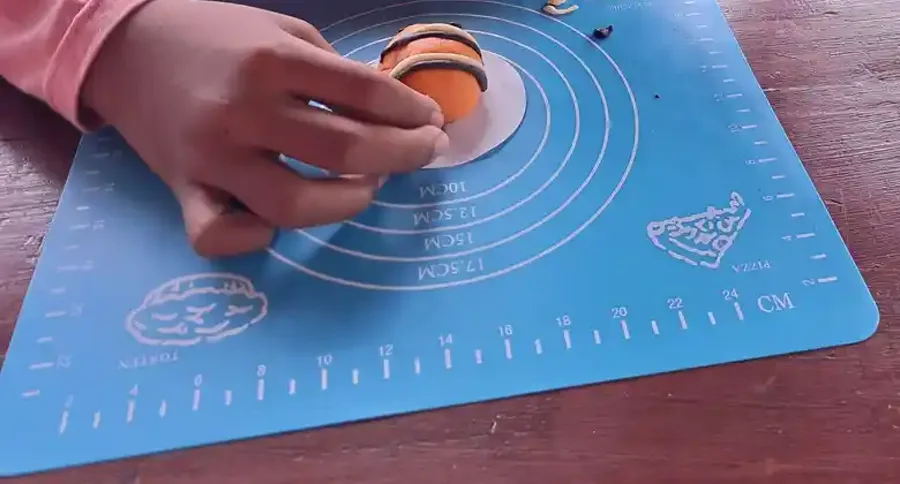
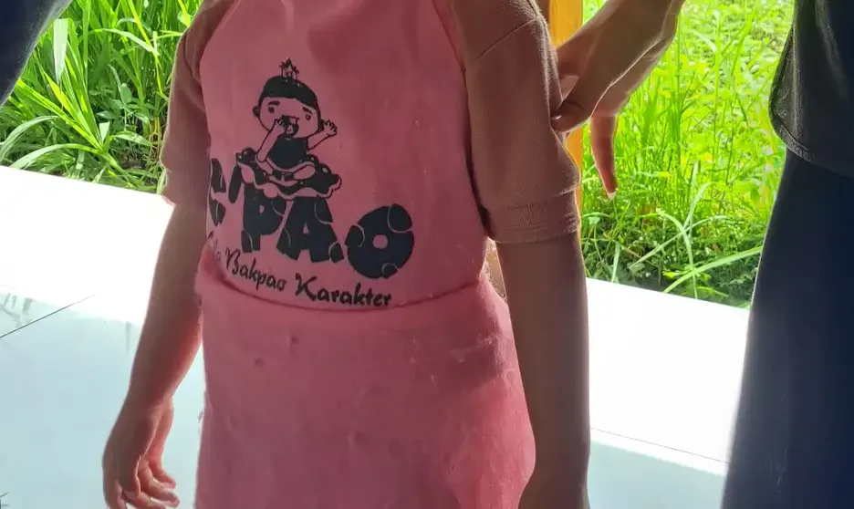

Jawaban singkat: Pemeriksaan tumbuh kembang anak di Yogyakarta bisa dimulai dari Puskesmas, yang menurut Permenkes 66 Tahun 2014 menjalankan stimulasi, deteksi, dan intervensi dini tumbuh kembang serta merujuk bila ada kelainan. Untuk pemeriksaan lanjutan, situs resmi RSUD Kota Yogyakarta mencantumkan Klinik Tumbuh Kembang Anak, RS Jiwa Grhasia DIY mencantumkan Poliklinik Anak dan Rehabilitasi Medik dengan terapi tumbuh kembang anak, dan RSUP Dr. Sardjito menyediakan MCU Anak. Selalu konfirmasi jadwal dan alur rujukan langsung ke fasilitasnya.
Daftar Isi
- Apa itu klinik tumbuh kembang anak
- Kapan anak perlu diperiksakan
- Mulai dari Puskesmas: SDIDTK
- Layanan tumbuh kembang di rumah sakit Yogyakarta
- Alur dari skrining sampai terapi
- Apa yang terjadi saat asesmen
- Menyiapkan kunjungan pertama
- Biaya dan jaminan kesehatan
- Cara menilai layanan
- Pertanyaan yang sering diajukan
Apa Itu Klinik Tumbuh Kembang Anak?
Klinik tumbuh kembang anak adalah layanan yang membantu keluarga memahami apakah pertumbuhan dan perkembangan anak berjalan sesuai usianya. Pertumbuhan berkaitan dengan ukuran tubuh, seperti berat badan, tinggi badan, dan lingkar kepala. Perkembangan berkaitan dengan kemampuan, seperti bergerak, memakai tangan, memahami dan memakai bahasa, bermain, serta mengurus diri sendiri.
Di rumah sakit, layanan ini biasanya dipimpin dokter spesialis anak dan dapat melibatkan psikolog, terapis wicara, terapis okupasi, dan fisioterapis. Hasil pemeriksaan menjadi dasar keputusan berikutnya: cukup dipantau dan diberi stimulasi di rumah, perlu pemeriksaan tambahan, atau perlu program terapi. Karena itu, klinik tumbuh kembang berbeda dengan tempat terapi. Klinik membantu menjawab pertanyaan "apa yang dibutuhkan anak", sedangkan tempat terapi menjalankan latihan yang sudah direncanakan. Bila Anda sudah tahu jenis terapi yang dibutuhkan, panduan tempat terapi anak di Jogja membahas pilihan lokasinya.
Satu hal yang sering terlupa: klinik tumbuh kembang tidak hanya untuk anak yang sudah memiliki diagnosis. Banyak keluarga datang karena ragu, misalnya anak belum mengucapkan kata pada usia yang diharapkan, sering jatuh, atau sulit mengikuti kegiatan kelompok. Datang lebih awal membantu keluarga mendapat kepastian, entah kekhawatirannya terbukti atau tidak.

Kapan Anak Perlu Diperiksakan?
Setiap anak berkembang dengan kecepatan berbeda, tetapi ada batas usia tertentu ketika sebuah kemampuan seharusnya sudah muncul. Ikatan Dokter Anak Indonesia (IDAI) menjelaskan bahwa perkembangan anak terbagi dalam beberapa ranah, yaitu motorik kasar, motorik halus, bahasa atau bicara, dan personal sosial atau kemandirian. Keterlambatan dapat terjadi di satu ranah saja, atau di dua ranah atau lebih yang disebut keterlambatan perkembangan umum. IDAI juga menegaskan bahwa untuk mengetahuinya diperlukan laporan atau keluhan orang tua dan pemeriksaan skrining perkembangan dengan alat yang sesuai.
Beberapa situasi yang layak dibicarakan dengan tenaga kesehatan:
- Anak belum mencapai kemampuan yang umumnya sudah dikuasai anak seusianya, misalnya duduk, berjalan, menunjuk, atau merangkai kata. Rinciannya ada di penjelasan tentang milestone anak.
- Anak kehilangan kemampuan yang sebelumnya sudah bisa dilakukan, misalnya kata yang dulu sering diucapkan tidak lagi muncul.
- Gerakan tampak kaku, lemas, atau tidak seimbang antara sisi kanan dan kiri. Lihat juga tanda keterlambatan motorik kasar dan tanda keterlambatan motorik halus.
- Anak jarang menoleh saat dipanggil, jarang berbagi perhatian, atau sangat sulit beradaptasi dengan perubahan kecil.
- Guru, kader Posyandu, atau tenaga kesehatan menyampaikan kekhawatiran yang sama dengan yang Anda rasakan.
Daftar ini bukan alat diagnosis. Gunakan sebagai bahan percakapan. Untuk membantu menyusun catatan, Anda bisa mencoba alat bantu skrining milestone dan tanda waspada di situs ini, lalu membawa hasilnya ke petugas kesehatan. Langkah-langkah lengkapnya ada di panduan deteksi dini tumbuh kembang anak.
Mulai dari Puskesmas: Layanan SDIDTK
Banyak keluarga langsung mencari rumah sakit besar, padahal titik awal yang diatur pemerintah ada di layanan kesehatan dasar. Permenkes Nomor 66 Tahun 2014 tentang Pemantauan Pertumbuhan, Perkembangan, dan Gangguan Tumbuh Kembang Anak, yang berstatus berlaku di JDIH BPK saat kami periksa, mengatur beberapa hal penting:
- Pasal 4 ayat (1): pemantauan pertumbuhan, perkembangan, dan gangguan tumbuh kembang anak dilakukan di fasilitas pelayanan kesehatan dasar dan di taman kanak-kanak.
- Pasal 5: pemantauan pertumbuhan dilakukan pada anak usia 0 sampai 72 bulan melalui penimbangan berat badan setiap bulan dan pengukuran tinggi badan setiap 3 bulan. Pemantauan perkembangan dilakukan setiap 3 bulan pada usia 0 sampai 12 bulan dan setiap 6 bulan pada usia 12 sampai 72 bulan.
- Pasal 6: pemantauan diselenggarakan melalui stimulasi yang memadai, deteksi dini, dan intervensi dini gangguan tumbuh kembang. Rangkaian inilah yang dikenal sebagai SDIDTK.
- Pasal 7: bila ditemukan kelainan tumbuh kembang pada anak balita, tenaga kesehatan harus melakukan rujukan sesuai standar.
Artinya, Puskesmas di wilayah tempat tinggal Anda, baik di Kota Yogyakarta, Sleman, Bantul, Kulon Progo, maupun Gunungkidul, adalah pintu masuk yang wajar. Tanyakan kapan jadwal pemeriksaan tumbuh kembang anak dan apakah perlu membuat janji. Bila petugas menemukan hal yang perlu diperiksa lebih lanjut, mereka dapat membuat rujukan ke rumah sakit.
Posyandu juga berperan. Kementerian Kesehatan mengingatkan bahwa Buku KIA memuat ceklis perkembangan sesuai usia, dan orang tua dapat meminta bantuan kader saat hari buka Posyandu bila ragu mengisinya. Ceklis ini membantu Anda membawa data yang rapi saat bertemu dokter.

Layanan Tumbuh Kembang di Rumah Sakit Yogyakarta
Baca ini sebelum melihat daftar
Daftar di bawah ini bukan rekomendasi, bukan peringkat, dan bukan mitra YUKA. Kami hanya mencatat apa yang tertulis di situs resmi masing-masing fasilitas saat diperiksa pada 12 Oktober 2026. Kami tidak mencantumkan nama dokter atau terapis, dan tidak mencantumkan tarif. Layanan, jadwal, tenaga, dan syarat rujukan dapat berubah, jadi hubungi fasilitas sebelum datang.
Kami mengutamakan rumah sakit milik pemerintah karena umumnya menjadi tujuan rujukan dari Puskesmas. Dua rumah sakit non pemerintah ditambahkan karena halaman resminya merinci layanan tumbuh kembang dengan jelas. Tabel berikut merangkum apa yang tertulis di situs resmi masing-masing.
| Fasilitas | Pengelola | Layanan terkait yang tercantum di situs resmi | Alamat dan kontak (sesuai situs) |
|---|---|---|---|
| RSUD Kota Yogyakarta (Rumah Sakit Jogja) | Pemerintah Kota Yogyakarta | Klinik Tumbuh Kembang Anak, Klinik Anak, Pelayanan Psikologi, Rehabilitasi Medik (fisioterapi, okupasi terapi, terapi wicara) | Jl. Wirosaban No. 1, Yogyakarta. Telepon 0274-371195 / 386691 / 386692 |
| RS Jiwa Grhasia DIY | Pemerintah Daerah DIY | Poliklinik Anak (layanan dan konsultasi tumbuh kembang), Klinik Psikologi (asesmen anak berkebutuhan khusus, asesmen kesulitan belajar), Rehabilitasi Medik (fisioterapi dan okupasi terapi tumbuh kembang anak, terapi wicara), Klinik Jiwa Anak dan Remaja | Jl. Kaliurang No. 17, Duwetsari, Pakembinangun, Pakem, Sleman 55582. Telepon (0274) 895143 / 895297 |
| RSUP Dr. Sardjito | Kementerian Kesehatan | MCU Anak untuk memantau pertumbuhan dan perkembangan serta mendeteksi dini gangguan tumbuh kembang | Jl. Kesehatan No. 1, Sekip, Sinduadi, Yogyakarta 55284. Contact center 1500 705 |
| RS PKU Muhammadiyah Yogyakarta | Swasta (Muhammadiyah) | Klinik Tumbuh Kembang, Terapi Tumbuh Kembang Anak (okupasi terapi, fisioterapi anak, terapi wicara, stimulasi sensori integrasi), Klinik Psikologi Klinis | Jl. KH. Ahmad Dahlan No. 20, Ngupasan, Gondomanan, Yogyakarta 55122. Call center 0274-512653 (ext. 118) |
| Rumah Sakit Akademik UGM | Universitas Gadjah Mada | Rehabilitasi Medik: dokter spesialis rehabilitasi medik, fisioterapi, okupasi terapi, terapi wicara, ortotis prostetis | Jl. Kabupaten (Lingkar Utara), Kronggahan, Trihanggo, Gamping, Sleman 55291. Pusat Layanan Informasi 0811 2856 210 |
RSUD Kota Yogyakarta (Rumah Sakit Jogja)
Halaman Rawat Jalan rumah sakit milik Pemerintah Kota Yogyakarta ini mencantumkan Klinik Tumbuh Kembang Anak, Klinik Anak, dan Pelayanan Psikologi dalam daftar kliniknya. Halaman Rehab Medik menjelaskan tiga layanan: fisioterapi, okupasi terapi, dan terapi wicara. Pada bagian okupasi terapi, keterlambatan tumbuh kembang disebut sebagai salah satu kondisi yang dilayani. Situs yang sama mencantumkan jam pendaftaran klinik pagi Senin sampai Kamis pukul 07.15 sampai 11.00 WIB dan Jumat sampai Sabtu pukul 07.15 sampai 10.00 WIB, dengan catatan jadwal dapat berubah.
RS Jiwa Grhasia DIY
Rumah sakit milik Pemerintah Daerah DIY di Pakem, Sleman ini tidak hanya melayani kesehatan jiwa. Halaman Poliklinik Anak menyebut klinik anak memberikan layanan tumbuh kembang serta konsultasi terkait tumbuh kembang anak. Halaman Klinik Psikologi mencantumkan asesmen anak berkebutuhan khusus, asesmen kesulitan belajar, dan penelusuran potensi anak. Halaman Rehabilitasi Medik merinci fisioterapi tumbuh kembang anak, okupasi terapi termasuk terapi preschooling dan terapi tumbuh kembang anak, serta terapi wicara untuk gangguan bahasa, bicara, dan menelan, dengan keterangan bisa diakses pasien BPJS. Halaman Klinik Jiwa juga menyebut Klinik Jiwa Anak dan Remaja yang dilayani subspesialis.
RSUP Dr. Sardjito
Rumah sakit vertikal Kementerian Kesehatan ini adalah rujukan tingkat lanjut di DIY. Di situs resminya, kami menemukan layanan MCU Anak yang dirancang untuk memantau pertumbuhan, perkembangan, dan kondisi kesehatan anak, termasuk mendeteksi dini gangguan tumbuh kembang. Kami tidak menemukan halaman yang merinci klinik tumbuh kembang atau unit terapi anak di situs tersebut, jadi tanyakan langsung ke contact center. Halaman kontak mencantumkan jam rawat jalan Senin sampai Jumat pukul 08.00 sampai 16.00.
RS PKU Muhammadiyah Yogyakarta
Halaman Terapi Tumbuh Kembang Anak rumah sakit swasta ini menyebut layanannya ditujukan bagi anak dengan keterlambatan perkembangan, gangguan motorik halus dan kasar, gangguan bicara dan bahasa, spektrum autisme, ADHD, hingga gangguan sensorik. Setiap anak disebut menjalani asesmen komprehensif lebih dulu, lalu program dapat meliputi terapi okupasi, fisioterapi anak, terapi wicara, dan stimulasi sensori integrasi. Daftar polikliniknya juga memuat Klinik Tumbuh Kembang dan Klinik Psikologi Klinis.
Rumah Sakit Akademik UGM
Halaman Rehabilitasi Medik rumah sakit pendidikan milik Universitas Gadjah Mada ini menyebut timnya terdiri dari dokter spesialis rehabilitasi medik sebagai koordinator, fisioterapi, terapi okupasi, terapi wicara, dan ortotis prostetis. Halaman tersebut juga mencantumkan jumlah tenaganya, yaitu satu dokter spesialis rehabilitasi medik, tiga fisioterapis, satu okupasi terapis, satu terapis wicara, dan satu ortotis prostetis. Jumlah tenaga yang terbatas berarti antrean mungkin panjang, jadi tanyakan ketersediaan jadwal untuk anak.
Kami tidak memasukkan klinik atau rumah terapi swasta perorangan karena sulit memverifikasi izin dan tenaganya dari sumber publik. Bila Anda mempertimbangkan layanan seperti itu, pakai daftar pertanyaan di bagian penilaian layanan di bawah.

Alur dari Skrining sampai Terapi
Setiap fasilitas punya prosedurnya sendiri, tetapi alurnya umumnya seperti ini:
- Pemantauan di rumah dan Posyandu. Isi ceklis perkembangan di Buku KIA dan catat hal yang membuat Anda khawatir.
- Pemeriksaan di Puskesmas atau dokter tingkat pertama. Petugas melakukan skrining. Bila hasilnya meragukan atau menyimpang, mereka menentukan apakah perlu stimulasi tambahan dan pemeriksaan ulang, atau rujukan.
- Pemeriksaan dokter spesialis anak. Dokter menilai riwayat, pertumbuhan, dan kondisi fisik, lalu menentukan pemeriksaan lanjutan.
- Asesmen oleh tim. Psikolog atau terapis menilai area yang perlu dukungan. Satu kunjungan sering belum cukup.
- Rencana dan program terapi. Program berisi tujuan yang dapat diamati, jadwal, dan latihan di rumah.
- Evaluasi berkala. Rencana ditinjau ulang. Tujuan diganti bila sudah tercapai atau bila strategi tidak berhasil.
Bila anak sudah bersekolah, libatkan guru sejak awal. Catatan guru tidak menggantikan pemeriksaan, tetapi membantu dokter dan terapis melihat anak di lingkungan yang berbeda. Gambaran berbagai jenis terapi dan fungsinya ada di penjelasan terapi anak untuk apa saja.
Apa yang Terjadi Saat Asesmen?
Asesmen yang baik dimulai dengan mendengarkan keluarga. Dokter atau terapis akan bertanya tentang kehamilan dan kelahiran, riwayat sakit, kemampuan anak sekarang, rutinitas harian, dan apa yang paling ingin keluarga ubah. Setelah itu, anak diamati saat bermain atau mengerjakan tugas sederhana. Beberapa tes memakai alat ukur baku, sehingga petugas perlu menjelaskan apa yang diukur dan apa batasnya.
Tabel berikut menggambarkan peran yang umum di tim tumbuh kembang. Tidak semua anak membutuhkan semua tenaga ini, dan tidak semua fasilitas memiliki seluruhnya.
| Tenaga | Yang biasanya dinilai atau dikerjakan | Pertanyaan yang bisa Anda ajukan |
|---|---|---|
| Dokter spesialis anak | Riwayat kesehatan, pertumbuhan, pemeriksaan fisik, kebutuhan pemeriksaan penunjang, dan rujukan ke anggota tim lain | Apa kemungkinan penyebab yang perlu disingkirkan dulu? Pemeriksaan apa yang benar-benar diperlukan? |
| Psikolog | Kemampuan berpikir, belajar, perilaku, emosi, dan interaksi sosial melalui wawancara, observasi, dan alat ukur | Alat ukur apa yang dipakai? Kapan laporan tertulisnya bisa diterima? |
| Terapis wicara | Pemahaman bahasa, cara anak menyampaikan keinginan, pengucapan, kelancaran bicara, dan kemampuan menelan | Target komunikasi apa yang paling penting untuk tiga bulan ke depan? |
| Terapis okupasi | Aktivitas sehari-hari, keterampilan tangan, kesiapan menulis, bermain, dan respons terhadap rangsang sensori | Latihan apa yang bisa dilakukan di rumah dan di sekolah? |
| Fisioterapis | Gerak, postur, keseimbangan, kekuatan otot, dan cara anak berpindah tempat | Bagaimana tanda anak terlalu lelah atau kesakitan saat latihan? |
Mintalah hasil asesmen dalam bentuk tertulis. Laporan yang baik menjelaskan kekuatan anak, area yang perlu dukungan, saran tindak lanjut, dan kapan evaluasi berikutnya. Untuk gambaran tes psikologi anak, lihat panduan tes psikolog anak.

Menyiapkan Kunjungan Pertama
Kunjungan pertama sering terasa singkat. Persiapan sederhana membantu waktu konsultasi terpakai dengan baik:
- Buku KIA atau catatan perkembangan. Tandai bagian ceklis yang belum tercapai.
- Dokumen administrasi. Kartu identitas, kartu keluarga, kartu jaminan kesehatan, dan surat rujukan bila memakai BPJS.
- Hasil pemeriksaan sebelumnya. Termasuk laporan dari sekolah, terapis lain, atau pemeriksaan pendengaran dan penglihatan.
- Catatan kejadian sehari-hari. Tulis contoh konkret: kapan terjadi, berapa lama, dan apa yang sudah dicoba.
- Video pendek. Rekaman anak saat makan, bermain, atau berkomunikasi di rumah dapat membantu, karena anak sering bersikap berbeda di ruang periksa.
- Daftar pertanyaan. Tulis tiga pertanyaan terpenting agar tidak lupa.
Siapkan juga anak. Ceritakan dengan bahasa sederhana bahwa ia akan bertemu dokter dan bermain. Bawa camilan, minuman, dan mainan kecil yang menenangkan. Bila anak mudah lelah atau gelisah di tempat ramai, tanyakan apakah ada jam kunjungan yang lebih sepi.

Biaya dan Jaminan Kesehatan
Kami tidak mencantumkan angka tarif di artikel ini. Tarif rumah sakit pemerintah ditetapkan melalui peraturan daerah, peraturan kepala daerah, atau keputusan direksi yang dapat diganti, sedangkan tarif rumah sakit swasta dapat berubah sewaktu-waktu. Mengutip angka dari dokumen yang sudah tidak berlaku justru bisa menyesatkan. Tanyakan langsung ke bagian pendaftaran dan minta rincian tertulis untuk konsultasi dokter, asesmen psikologi, sesi terapi, dan laporan.
Untuk peserta BPJS Kesehatan, mulailah dari fasilitas kesehatan tingkat pertama tempat anak terdaftar dan tanyakan alur rujukannya. Dari halaman yang kami periksa, hanya RS Jiwa Grhasia yang secara tertulis menyebut layanan rehabilitasi mediknya bisa diakses pasien BPJS. Gambaran umum biaya terapi dan cara merencanakannya ada di panduan biaya terapi anak berkebutuhan khusus. Bila anak memiliki disabilitas, pelajari juga hak layanan di Perda Disabilitas DIY.
Cara Menilai Layanan Tumbuh Kembang
Baik di rumah sakit pemerintah maupun swasta, beberapa pertanyaan berikut membantu Anda menilai kualitas layanan:
- Siapa yang akan memeriksa anak, dan apa latar belakang profesinya?
- Bagaimana hasil asesmen disampaikan, dan apakah ada laporan tertulis?
- Apa tujuan terapi yang dapat diamati, dan kapan dievaluasi?
- Apa yang bisa keluarga lakukan di rumah di antara sesi?
- Bagaimana komunikasi dengan sekolah atau guru pendamping?
Waspadai janji sembuh total dalam jumlah sesi tertentu, larangan berkonsultasi dengan dokter lain, keharusan membeli produk mahal, atau tekanan agar segera membayar paket panjang. Layanan yang baik terbuka tentang batasnya dan tidak keberatan bila Anda mencari pendapat kedua.
YUKA adalah yayasan pendidikan inklusi, bukan fasilitas kesehatan, dan tidak bekerja sama dengan rumah sakit yang disebut di atas. Bila Anda mencari dukungan pendidikan untuk anak setelah pemeriksaan, kenali sekolah inklusi di Sleman atau yayasan ABK di Yogyakarta. Keluarga di Solo Raya dapat membaca panduan mencari terapis anak di Solo.
Status tinjauan medis: artikel ini disusun oleh tim pendidik YUKA dan belum ditinjau oleh dokter, terapis, atau psikolog berlisensi. Informasi fasilitas diambil dari situs resmi masing-masing pada 12 Oktober 2026 dan dapat berubah sewaktu-waktu. Alur tinjauan dan koreksi dijelaskan di Kebijakan Editorial YUKA. Untuk keputusan pemeriksaan dan terapi, ikuti saran tenaga kesehatan yang menangani anak.
Pertanyaan yang Sering Diajukan
Di mana klinik tumbuh kembang anak milik pemerintah di Yogyakarta?
Dari situs resmi yang kami periksa pada 12 Oktober 2026, RSUD Kota Yogyakarta (Rumah Sakit Jogja) mencantumkan Klinik Tumbuh Kembang Anak di daftar klinik rawat jalannya, dan RS Jiwa Grhasia DIY mencantumkan Poliklinik Anak dengan layanan tumbuh kembang serta Rehabilitasi Medik dengan fisioterapi dan okupasi terapi tumbuh kembang anak. RSUP Dr. Sardjito menyediakan MCU Anak yang menyebut deteksi dini gangguan tumbuh kembang. Hubungi fasilitas dulu karena layanan dan jadwal dapat berubah.
Apakah harus ke rumah sakit dulu untuk memeriksa tumbuh kembang anak?
Tidak selalu. Permenkes 66 Tahun 2014 menyebut pemantauan tumbuh kembang dilakukan di fasilitas pelayanan kesehatan dasar, dan bila ditemukan kelainan, tenaga kesehatan wajib merujuk sesuai standar. Jadi Puskesmas atau dokter di fasilitas tingkat pertama adalah titik awal yang wajar, lalu rujukan ke rumah sakit bila diperlukan.
Apa bedanya klinik tumbuh kembang dengan tempat terapi anak?
Klinik tumbuh kembang berfokus pada pemantauan, deteksi, dan pemeriksaan untuk memahami kebutuhan anak, biasanya oleh dokter anak bersama psikolog dan terapis. Tempat terapi menjalankan program latihan, misalnya terapi wicara, okupasi, atau fisioterapi, berdasarkan hasil pemeriksaan tersebut. Di rumah sakit, keduanya sering berada di unit yang berbeda.
Kapan anak perlu diperiksakan ke klinik tumbuh kembang?
Periksakan bila anak belum mencapai kemampuan yang diharapkan untuk usianya, kehilangan kemampuan yang sebelumnya sudah bisa, atau ada kekhawatiran dari keluarga, guru, atau kader Posyandu. IDAI menjelaskan bahwa untuk mengetahui keterlambatan perkembangan diperlukan laporan orang tua dan pemeriksaan skrining perkembangan yang memakai alat yang sesuai.
Apakah layanan tumbuh kembang di rumah sakit bisa memakai BPJS Kesehatan?
Halaman Rehabilitasi Medik RS Jiwa Grhasia menyebut layanan fisioterapi, okupasi terapi, dan terapi wicaranya bisa diakses pasien BPJS. Untuk fasilitas lain, kami tidak menemukan keterangan tertulis yang spesifik. Peserta BPJS biasanya memulai dari fasilitas kesehatan tingkat pertama tempatnya terdaftar, jadi tanyakan alur rujukannya di sana sebelum datang ke rumah sakit.
Berapa biaya pemeriksaan di klinik tumbuh kembang anak Yogyakarta?
Kami sengaja tidak mencantumkan angka tarif. Tarif rumah sakit pemerintah diatur oleh peraturan daerah atau keputusan direksi yang dapat diganti, dan tarif rumah sakit swasta dapat berubah. Tanyakan rincian biaya konsultasi, asesmen, dan sesi terapi langsung ke bagian pendaftaran, lalu minta dalam bentuk tertulis.
Apa yang perlu dibawa saat pertama kali ke klinik tumbuh kembang?
Bawa Buku KIA atau catatan perkembangan anak, kartu identitas dan kartu jaminan kesehatan, surat rujukan bila ada, hasil pemeriksaan sebelumnya, serta catatan singkat tentang kekhawatiran keluarga dan contoh kejadian sehari-hari. Video pendek perilaku anak di rumah juga dapat membantu dokter atau terapis memahami situasinya.
Apakah YUKA bekerja sama dengan rumah sakit yang disebut di artikel ini?
Tidak. Daftar di artikel ini disusun dari informasi publik di situs resmi masing-masing fasilitas. Daftar ini bukan rekomendasi, bukan peringkat, dan tidak menunjukkan kerja sama dengan YUKA. YUKA adalah yayasan pendidikan inklusi, bukan fasilitas kesehatan.
Bacaan Terkait
Sumber dan Referensi
- RSUD Kota Yogyakarta, Pelayanan Rawat Jalan (daftar Klinik Tumbuh Kembang Anak, Pelayanan Psikologi)
- RSUD Kota Yogyakarta, Pelayanan Rehab Medik (fisioterapi, okupasi terapi, terapi wicara)
- RS Jiwa Grhasia DIY, Poliklinik Anak
- RS Jiwa Grhasia DIY, Klinik Psikologi
- RS Jiwa Grhasia DIY, Rehabilitasi Medik
- RS Jiwa Grhasia DIY, Poliklinik Spesialis Jiwa (Klinik Jiwa Anak dan Remaja)
- RSUP Dr. Sardjito, MCU Anak
- RSUP Dr. Sardjito, Hubungi Kami
- RS PKU Muhammadiyah Yogyakarta, Terapi Tumbuh Kembang Anak
- Rumah Sakit Akademik UGM, Rehabilitasi Medik
- JDIH BPK, Permenkes Nomor 66 Tahun 2014 (Pasal 4 sampai 8), status Berlaku
- IDAI, Mengenal Keterlambatan Perkembangan Umum pada Anak
- Kemenkes Ayo Sehat, Stimulasi Tumbuh Kembang dengan Buku KIA
Catatan: Artikel ini bersifat edukasi umum dan bukan pengganti konsultasi dengan psikolog, tenaga kesehatan, atau petugas layanan sosial resmi. Alamat, telepon, dan layanan fasilitas dibaca langsung dari situs resmi masing-masing pada 12 Oktober 2026. Status Permenkes 66/2014 dicek di JDIH BPK pada tanggal yang sama. Daftar fasilitas bukan rekomendasi dan bukan mitra YUKA.